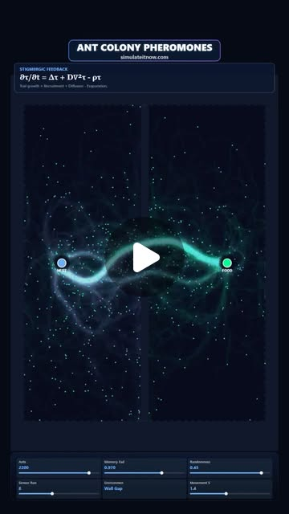
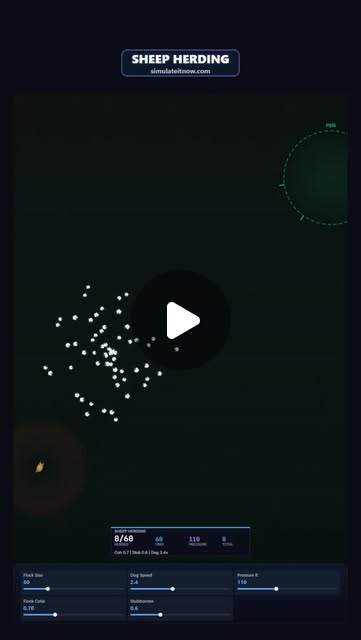
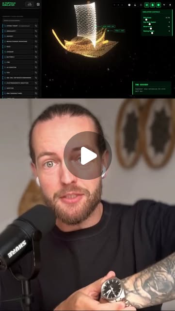
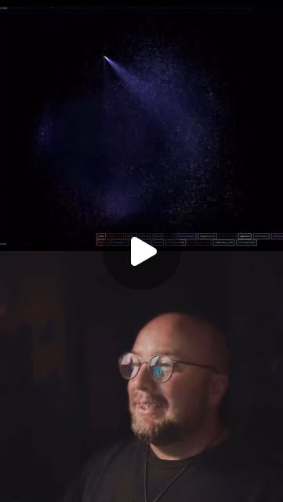
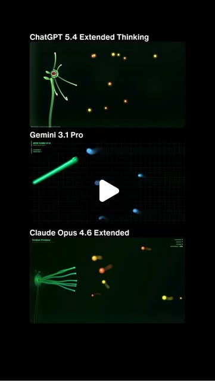
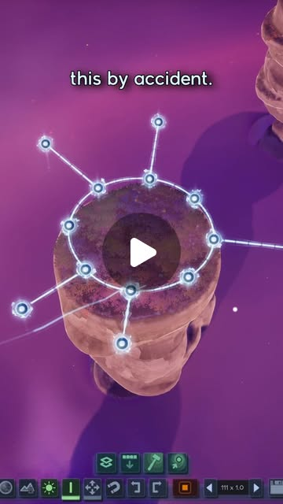

Code as Canvas: When Algorithms Become the Artist
Try It — Action Sketch
Pick a natural system (flocking, diffusion, growth). Code it in p5.js or TouchDesigner. Add interaction (sound, body tracking, data feeds). The art emerges — you don't draw it, you evolve it.
Connected Posts (6)






Prompt system — run this yourself
Pasteable into Claude Code, Claude, or any agent. One-shot for the whole result, step prompts when you want to steer. Every step carries its own audit; the gap audit makes the agent find and fill what it missed.
Mission. Running this system produces a small generative-art practice in code: three seeded simulations (ant colony optimization with pheromone diffusion and evaporation, shepherd-and-flock boids with a pressure field, and a rule-based 'code garden' that grows and links pieces over time like Randy Roberts'), each deterministic per seed, fast enough to run live, and curated into a numbered output set. It also uses @empiricail's single-file canvas prompt as an evaluation to compare LLMs on writing such sketches. Done means each sim reproduces its known behavior (ACO picks the shorter branch in a double-bridge test), runs at 60 fps at the stated agent count, survives a 24-hour run without collapsing to blank, and is packaged without leaking source maps.
1 · Deeper, not bigger
- What a top professional would do (that you didn't ask for): A generative artist would treat the system's parameter space as the artwork and the seed as the edition: same seed, same image, forever. They would explore parameters systematically (a grid or Latin hypercube render sheet), keep a curation log of why outputs were kept, and check long-run behavior so a live piece does not converge to mush or freeze. A simulation engineer would validate each model against its known result before making it pretty: the double-bridge experiment for ACO, flocking order parameters for boids. They would use spatial hashing so agent counts scale, and ship the build with source maps off.
- Rawest material to start from: - Dorigo's ant colony optimization papers and Deneubourg's double-bridge experiment (ants choosing the shorter of two branches). - simulateitnow's two sims: the pheromone field update (as captioned, with diffusion D, evaporation rate rho and deposits; the caption writes it oddly as dt tau = laplacian tau + D laplacian tau - rho tau, so derive the standard form yourself) and the herding pressure force F = (1 - d/R)^1.2 with cohesion, alignment and separation. - Craig Reynolds' 1987 boids paper and his steering behaviors notes. - @rndyrbrts' description: a handheld computer, no AI at runtime, every five minutes it grows a poem, melody or cellular world and wires it into a knowledge graph. - @empiricail's canvas prompt text (plant creature intercepting oscillating circles) as an eval item. - particles.casberry.in output (HTML, React, three.js) as a comparison point. - The Claude Code npm source-map incident (nataindata) as a packaging lesson.
- Methods and tools: p5.js or plain Canvas2D/WebGL in a single HTML file; a seeded PRNG (mulberry32 or sfc32) and seeded noise, with the seed in the URL; Float32Array grids for pheromone fields with a 5-point Laplacian and explicit Euler (dt chosen under the stability limit dt < h^2/(4D)); uniform-grid spatial hashing for boids neighbor queries; order parameter (mean normalized velocity) to measure flocking; Python or headless Chrome (Playwright) to render parameter sheets and hash frames; a tiny graph store (JSON adjacency) for the code garden; cellular automata and Markov chains for its poems and melodies; npm pack --dry-run plus a grep for .map files before publishing anything.
- What proves it right: Known-result tests: ACO picks the shorter branch in at least 80% of double-bridge runs when one branch is twice as long. Determinism: the same seed renders a byte-identical PNG frame N in headless Chrome on two runs. Performance: the browser's performance profiler shows 60 fps at the stated agent count on named hardware. Longevity: a 24-hour headless run logs an entropy or coverage metric that never drops to a dead state. The LLM eval is scored blind by a second person with a rubric.
Rewritten prompt — ask for exactly that:
Build me a generative-art practice in code, not a single pretty sketch. Write three single-file HTML pieces with a seeded PRNG (seed in the URL): (1) ant colony optimization on a grid with two pheromone fields (home, food), diffusion D, evaporation rho and deposits, using a stable explicit scheme; validate it on Deneubourg's double-bridge setup, where the shorter branch should win most runs, before styling it; (2) a shepherd dog herding a flock using boids (cohesion, alignment, separation) plus simulateitnow's pressure force F = (1 - d/R)^1.2, with spatial hashing so 2,000 agents run at 60 fps; report the flock's order parameter; (3) a code garden in the spirit of Randy Roberts: every 5 minutes, simple rules grow a small cellular world, a Markov-chain line of text or a short melody, and link it into a JSON graph; no AI at runtime. For each piece, render a parameter sheet of 64 seeds and keep a curation log of chosen seeds and reasons. Prove determinism by hashing frame 600 twice per seed. Run each for 24 hours headless and log a liveness metric. Also run @empiricail's single-file canvas prompt on two or three LLMs and have it scored blind. Do not publish any package with source maps.
2 · One-shot prompt
ROLE AND STANCE You are a generative artist with a simulation engineer's habits. The rules are the artwork, the seed is the edition, and nothing is beautiful until it is reproducible and validated against the behavior it claims to model. CONTEXT - simulateitnow ACO: stigmergy with two signals (home and food); shorter paths get more traffic and stronger trails; more randomness turns the colony to exploration. Captioned field equation combines diffusion D, evaporation rho and deposits. - simulateitnow herding: one dog moves 60 sheep using a pressure radius R and force F = (1 - d/R)^1.2, plus cohesion, alignment and separation; wider radius means more control, low cohesion means scatter. - itsaiandy: a text-to-particles tool exporting HTML, React or three.js (particles.casberry.in). - Randy Roberts (@rndyrbrts): a code garden on a handheld computer, no AI at runtime, growing poems, melodies and cellular worlds every five minutes into a knowledge graph his AI later walks. - @empiricail: a single-file HTML canvas prompt (procedural plant creature intercepting oscillating circles) used to compare ChatGPT, Gemini and Claude. - nataindata: a ~60 MB debug and source bundle shipped in an npm package was forked tens of thousands of times; audit packages for source maps before release. HARD CONSTRAINTS - One HTML file per piece, no build step, no network calls at runtime. - Seeded PRNG only (no Math.random); seed and parameters read from the URL hash. - Numerical stability: explicit diffusion with dt below h^2/(4D); document the values. - Performance: 60 fps on the user's named machine at the stated agent count, measured. - If anything is published to npm or a host, no .map files, no debug bundles, verified with npm pack --dry-run. DELIVERABLES, IN ORDER 1. ground_truth.md: derived equations (pheromone update, boids forces, pressure force), stability bounds, the double-bridge setup, and the hardware used. 2. aco.html with a validation mode reproducing the double bridge. 3. herd.html with spatial hashing, order-parameter readout and a pressure-radius slider. 4. garden/: garden.html plus rules for cellular automata, a Markov text generator trained on a public-domain text, and a melody generator, linking each growth to a JSON graph every 5 minutes. 5. tools/render_sheet.js: Playwright script rendering 64 seeds per piece to a contact sheet and hashing frame 600. 6. curation.md: chosen seeds, parameters and reasons. 7. eval/: @empiricail's prompt run on 2-3 models, outputs saved, blind rubric scores. 8. report.md. BUILT-IN GAP ANALYSIS Keep GAPS in report.md marking VERIFIED, UNVERIFIED or FALSE with evidence: ACO shorter-branch selection rate; determinism (identical hashes); 60 fps at stated counts; 24-hour liveness for each piece; that the captioned field equation is stable and matches the standard form; the herding claims (wider radius controls more sheep, low cohesion scatters) measured with the order parameter and the share of sheep inside the target zone; the eval scored blind; no source maps in any package. SELF-QUESTIONS - If I remove the styling, does the ACO still find the shorter path, or is it just pretty trails? - Does any code path call Math.random or depend on frame timing, breaking determinism? - Is the diffusion step stable at the chosen dt, or does it blow up at high D? - Does the code garden reach a dead state (all cells off, a repeated phrase loop) within 24 hours? - Are the 64-seed sheets diverse, or do all seeds look the same? - Did I score the LLM eval blind? STOP CONDITIONS Stop and report if the double-bridge validation fails after checking the equations and parameters; do not proceed to styling. Ask before publishing anything publicly. RETURN FORMAT report.md with: validation tables (ACO selection rate over 50 runs; herding control share versus R and cohesion), determinism hashes, fps measurements, liveness plots summary, eval scores, curation list, GAPS, and the file tree.
3 · Step-by-step prompts
Step 1 — Ground truth: equations and known results
Goal: Derive the models and the tests they must pass before writing art code.
Write ground_truth.md. For ACO, state the standard pheromone update on a grid: tau(t+dt) = tau + dt*(D*laplacian(tau) - rho*tau) + deposits, with a 5-point Laplacian and grid spacing h. Note that simulateitnow's caption writes the Laplacian term twice; explain the standard form and why. Derive the explicit stability bound dt < h^2/(4D) and pick D, rho and dt. Describe Deneubourg's double-bridge experiment: nest and food joined by two branches, one twice as long; expected outcome, most runs converge on the shorter branch. For boids, write Reynolds' cohesion, alignment and separation rules with radii and weights, and simulateitnow's pressure force F = (1 - d/R)^1.2 for d < R, directed away from the dog. Define the flock order parameter (magnitude of mean unit velocity, 0 to 1). Record the user's machine, browser and display refresh rate.
Expect: ground_truth.md with equations, chosen parameters, stability check, double-bridge spec, order parameter definition, hardware.
Audit before moving on: Plug the chosen D, h and dt into the bound and confirm it holds with margin. Fail if any equation lacks a source (paper or the post); fix before step 2.
Step 2 — ACO piece with validation mode
Goal: Build an ant sim that is right first, beautiful second.
Write aco.html: a single file with a seeded PRNG (mulberry32 seeded from the URL hash), two Float32Array pheromone fields (home, food) updated with the stable scheme from ground_truth.md, and N ants that sense pheromone at three forward points, turn toward the strongest with noise, deposit the field opposite to their goal, and switch state on reaching food or nest. Add a validation mode (#mode=bridge) that loads the double-bridge map with branch length ratio 2:1 and logs which branch carries more than 80% of traffic after a fixed number of steps. Run 50 seeds in headless Chrome via Playwright and record the shorter-branch selection rate. Only then add the art layer: color by field, trails with additive blending, an exploration-noise slider to show the trail-loss behavior simulateitnow described.
Expect: aco.html, a validation results table over 50 seeds, and a screenshot of the art mode.
Audit before moving on: Fail if the shorter branch wins under 80% of runs. Check deposit and evaporation balance and sensing distance before changing anything cosmetic, and rerun.
Step 3 — Herding piece with spatial hashing
Goal: Make 2,000 boids and a dog run at 60 fps and test the herding claims.
Write herd.html: seeded PRNG, boids with cohesion, alignment and separation using a uniform-grid spatial hash (cell size equal to the largest neighbor radius) so neighbor queries are near O(n). Add a dog that moves toward the flock's far side relative to a target pen, and apply the pressure force F = (1 - d/R)^1.2 to every sheep within R. Show live readouts: fps, order parameter, share of sheep inside the pen. Add sliders for R and cohesion weight. In headless runs over 20 seeds, measure the share inside the pen after 60 seconds for R at 3 values and cohesion at 3 values, testing simulateitnow's claims that a wider radius controls more sheep and low cohesion scatters the flock. Profile in Chrome DevTools at 500, 1,000 and 2,000 agents.
Expect: herd.html, a 3x3 results table, and fps at three agent counts on the named machine.
Audit before moving on: Fail if fps is under 60 at 2,000 agents; profile and optimize the hot loop (typed arrays, no per-frame allocation). Fail if the measured trends contradict the claims without an explanation.
Step 4 — Code garden with a growth graph
Goal: Build a long-running piece that grows and links its own outputs.
Write garden/garden.html in the spirit of Randy Roberts' code garden, with no AI at runtime. Every 5 minutes (configurable; 5 seconds in test mode) it grows one item chosen by seeded rules: a cellular automaton world (a Life-like rule picked from a list, 64x64), a line of text from a Markov chain trained on a bundled public-domain text, or an 8-bar melody from a Markov chain over scale degrees played with WebAudio. Each item gets an id, parent links chosen by similarity (shared rule, shared words, shared intervals) and is appended to a JSON graph in localStorage with an export button. Render the graph as a slowly settling force layout beside the newest item. Add a liveness metric per item type: live-cell fraction, distinct n-grams, distinct intervals.
Expect: garden.html, exported graph JSON after a 1-hour test-mode run, liveness log.
Audit before moving on: Fail if any liveness metric hits a dead state (zero live cells for all CA items, repeated identical lines) within the test run. Add rule rotation or reseeding and rerun.
Step 5 — Determinism, parameter sheets, curation
Goal: Make each seed an edition and choose the keepers.
Write tools/render_sheet.js with Playwright: for each piece, open 64 seeds with fixed parameters, advance a fixed number of frames using a deterministic step function rather than requestAnimationFrame timing, screenshot frame 600, compute SHA-256, and tile thumbnails into a contact sheet. Run it twice and compare hashes; any mismatch is a determinism bug (look for Math.random, Date.now, frame-time-dependent physics, unordered object iteration). Then render a Latin hypercube of 32 parameter sets per piece. Pick 6-10 outputs per piece and write curation.md with seed, parameters, the hash and one sentence on why each was kept. Measure diversity: mean pairwise perceptual hash distance across the 64-seed sheet. Store sheets and hashes under renders/ named by piece, seed and parameter-set hash, so any edition can be regenerated and checked later.
Expect: Contact sheets, a hash table with matches across runs, curation.md, and a diversity number per piece.
Audit before moving on: Fail on any hash mismatch; fix the source of nondeterminism and rerun. Flag a piece whose diversity is low (seeds look alike) for parameter-range changes.
Step 6 — LLM canvas eval and packaging safety
Goal: Use the empiricail prompt as a fair model comparison and ship clean.
Take @empiricail's prompt verbatim (single HTML file, procedurally animated plant creature on the left intercepting and consuming circles rushing in from the right with erratic oscillating vertical trajectories, HTML5 Canvas, collision detection, smooth animation). Run it once each on 2-3 models the user has access to, with no follow-up turns, and save outputs as eval/model_X.html under random names. Write a rubric: runs without console errors, collision correctness (circles consumed only on contact), animation smoothness (fps), procedural animation quality, code readability; score 1-5 each. Have a second person score blind. Separately, if any piece is published as an npm package or deployed bundle, run npm pack --dry-run and grep the file list and the built output for .map files and sourceMappingURL comments.
Expect: eval/ with outputs, a blind score table and the name mapping revealed afterward; a packaging check log.
Audit before moving on: Fail the eval if scores were recorded with model names visible. Fail packaging if any .map file or sourceMappingURL appears; remove and recheck.
Step 7 — Validate against oracles and write the gap report
Goal: Show the pieces are correct, reproducible and alive.
Run each piece headless for 24 hours (or the longest the user allows) via Playwright, logging the liveness metrics and fps every minute. Compile: ACO shorter-branch rate over 50 seeds; herding 3x3 table and fps at 2,000 agents; determinism hashes across two runs; diversity per piece; garden liveness over 24 hours; blind eval scores; packaging check. Write report.md with these tables and a GAPS list marking each claim VERIFIED, UNVERIFIED or FALSE with evidence, including the source-post claims tested (shorter paths reinforce faster; wider pressure radius controls more sheep; the garden grows things neither planned). Fix the top three gaps now and rerun their checks. List what remains with the next action, and name which piece is ready to show live and which needs more work.
Expect: report.md with tables, 24-hour logs summary, GAPS and fixes.
Audit before moving on: Recompute two table values from raw logs. Fail if any VERIFIED row lacks a log path or hash.
4 · Gap analysis and audit
You are auditing a generative-art build: aco.html, herd.html, garden/, tools/render_sheet.js, curation.md, eval/, report.md. 1) Enumerate claims: ACO selection rate, determinism per seed, 60 fps at 2,000 agents, herding trends, 24-hour liveness, diversity, blind eval scores, no source maps. 2) Re-verify: rerun render_sheet.js for 8 seeds per piece and compare hashes to the table; grep all HTML for Math.random, Date.now and performance.now inside physics; rerun the double-bridge validation for 10 seeds; profile herd.html at 2,000 agents; check the garden's exported graph for dead stretches; confirm eval scoring was blind from the file history; run npm pack --dry-run where relevant. Mark VERIFIED, UNVERIFIED or FALSE with evidence. 3) Look for cosmetic cheats: validation done with different parameters than the art mode, fps measured at a lower resolution than shipped. 4) Rank gaps by impact on correctness and reproducibility. 5) Fix the top three and rerun. 6) Report what you could not fix and why.
Questions the agent must ask itself before it says done:
- Does ACO still pick the shorter branch with the art layer's parameters, not only in validation mode?
- Is any randomness unseeded, or any physics tied to frame time?
- Is the diffusion step below the stability bound with margin?
- Did the herding results support simulateitnow's claims about radius and cohesion, and if not, why?
- Does spatial hashing actually make 2,000 agents hit 60 fps on the user's machine?
- Does the code garden ever reach a dead or looping state?
- Are the 64 seeds diverse enough to be editions, or do they look alike?
- Was the LLM canvas eval scored blind, with one attempt per model?
- Is the Markov text trained on public-domain material?
- If anything is published, did I check for .map files and sourceMappingURL?
5 · What proves it right
- Double-bridge test: ACO selects the shorter branch in at least 80% of 50 seeded runs, logged by the validation mode.
- Determinism: Playwright renders frame 600 for each seed twice with identical SHA-256 hashes.
- Chrome DevTools performance profile: 60 fps at 2,000 boids on the named machine.
- 24-hour headless run: liveness metrics never hit a dead state.
- Blind scoring of the empiricail canvas prompt outputs by a second person with a written rubric.
- npm pack --dry-run and grep show no .map files or sourceMappingURL in any published artifact.
6 · Failure modes
- Pretty but wrong ACO. Tell: trails look organic but the double bridge picks branches at random. Fix: tune deposit, evaporation and sensing before styling.
- Diffusion blow-up. Tell: fields flash to white or NaN. Fix: respect dt < h^2/(4D) or use substeps.
- Nondeterminism. Tell: same seed, different frame hash. Fix: remove Math.random and time-based physics; fixed step.
- O(n^2) neighbors. Tell: fps collapses above 500 boids. Fix: spatial hash, typed arrays, no per-frame allocation.
- Dead garden. Tell: all-off CA worlds or repeated lines after hours. Fix: rule rotation, reseeding, novelty checks.
- Leaky publish. Tell: .map files in the package list. Fix: disable source maps in the build and recheck before release.
7 · Agent direction (unattended runs)
Start with ground_truth.md; the equations and the double-bridge test decide whether the ACO piece is right. Use plain HTML and Canvas so the pieces run anywhere; use Playwright in Node for all headless rendering, hashing and long runs. Spawn sub-agents for herd.html and garden/ once ground_truth.md exists, since they share no files; keep aco.html and render_sheet.js in the main loop. Cache contact sheets and hash tables by seed and parameter set. For the LLM eval, call models only through accounts the user has, one attempt each, and hand scoring to a human. Stop and ask before any public publish, and before running a 24-hour job that occupies the user's machine. Return: ground_truth.md, aco.html, herd.html, garden/, tools/, curation.md, eval/, report.md with GAPS.
Prompt system updated 2026-10-22 · all prompt systems · JSON